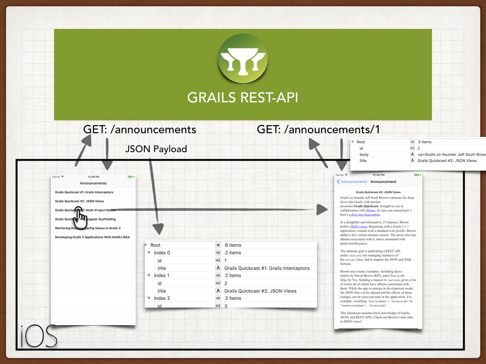

6 API version 2.0
Version: 4
6 API version 2.0
The problem with the first version of the API is that we include every announcement
body in the payload used to displayed the list. An announcement’s body can be a large block of HTML.
A user will probably just wants to check a couple of announcements. It will save bandwidth and
make the app faster if we don’t send the announcement body in the initial request. Instead, we will ask
the API for a complete announcement (including body) once the user taps the announcement.
6.1 Grails V2 Changes
We are going to use create a new Controller to handle the version 2 of the API. We are going to use a Criteria query with a projection to fetch only the id and title of the announcements.
grails-app/controllers/intranet/backend/v2/AnnouncementController.groovy
link:../snippets/grails-app/controllers/intranet/backend/v2/AnnouncementController.groovy[role=include]We encapsulate the querying in a service
grails-app/services/intranet/backend/AnnouncementService.groovy
link:../snippets/grails-app/services/intranet/backend/AnnouncementService.groovy[role=include]and we test it:
/src/test/groovy/intranet/backend/AnnouncementServiceSpec.groovy
link:../snippets/src/test/groovy/intranet/backend/AnnouncementServiceSpec.groovy[role=include]Url Mapping
We need to map the version 2.0 of the Accept-Header to the namespace v2
/grails-app/controllers/intranet/backend/UrlMappings.groovy
link:../snippets/grails-app/controllers/intranet/backend/UrlMappings.groovy[role=include]6.2 Api 2.0 Functional tests
We want to test the Api version 2.0 does not include the body property when receiving a GET request to the announcements endpoint. The next functional test verifies that behaviour.
{sourceDir}
/src/integration-test/groovy/intranet/backend/AnnouncementControllerSpec.groovy
link:../snippets/src/integration-test/groovy/intranet/backend/AnnouncementControllerSpec.groovy[role=include]| 1 | serverPort property is automatically injected. It contains the random port where the Grails application runs during the functional test |
| 2 | Body is not present in the JSON paylod |
Grails command test-app runs unit, integration and functional tests.
6.3 iOS V2 Changes
First we need to change the Api version constant defined in GrailsFetcher.h
/complete-objectivec-ios-v2/IntranetClient/GrailsFetcher.h
link:{sourcedir}/../complete-objectivec-ios-v2/IntranetClient/GrailsFetcher.h[role=include]| 1 | uses Api version 2.0 |
In version 2.0 the Api does not return the body of the announcements. Instead of setting an announcement property we are going to set just the resource identifier(primary key) in the DetailViewController. We have changed the prepareForSegue:sender method in MasterViewController as illustrated below:
/complete-objectivec-ios-v2/IntranetClient/MasterViewController.m
link:{sourcedir}/../complete-objectivec-ios-v2/IntranetClient/MasterViewController.m[role=include]| 1 | Instead of setting an object, we set an NSNumber |
DetailViewController asks the server for a complete announcement; body included.
/complete-objectivec-ios-v2/IntranetClient/DetailViewController.h
link:{sourcedir}/../complete-objectivec-ios-v2/IntranetClient/DetailViewController.h[role=include]/complete-objectivec-ios-v2/IntranetClient/DetailViewController.m
link:{sourcedir}/../complete-objectivec-ios-v2/IntranetClient/DetailViewController.m[role=include]It uses a new fetcher:
/complete-objectivec-ios-v2/IntranetClient/AnnouncementFetcher.h
link:{sourcedir}/../complete-objectivec-ios-v2/IntranetClient/AnnouncementFetcher.h[role=include]/complete-objectivec-ios-v2/IntranetClient/AnnouncementFetcher.m
link:{sourcedir}/../complete-objectivec-ios-v2/IntranetClient/AnnouncementFetcher.m[role=include]And a delegate protocol to indicate if the announcement has been fetched
/complete-objectivec-ios-v2/IntranetClient/AnnouncementFetcherDelegate.h
link:{sourcedir}/../complete-objectivec-ios-v2/IntranetClient/AnnouncementFetcherDelegate.h[role=include]